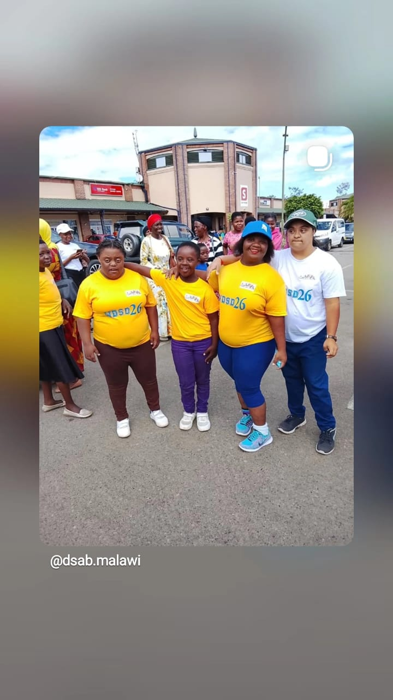

01
Trisomy 21
The most common type. Each cell has three copies of chromosome 21 instead of the usual two.
Every person has their own abilities, personality and potential. Understanding Down syndrome helps us create communities where everyone is respected, included and given the opportunity to thrive.

Down syndrome is a genetic condition. People with Down syndrome have an extra copy of chromosome 21 in all or some of their cells. This is also called trisomy 21.
It occurs naturally at conception. It is not caused by anything a parent did or did not do. Down syndrome occurs in people everywhere, across all countries and communities.
People with Down syndrome have different personalities, interests, strengths and support needs. The condition does not define the whole person.
Chromosomes are structures inside our cells that carry genetic information. Most people have 46 chromosomes, arranged in 23 pairs.
In Down syndrome, there is extra genetic material from chromosome 21. This extra material influences how the body and brain develop.
There are three main types. They all involve extra genetic material from chromosome 21.
The most common type. Each cell has three copies of chromosome 21 instead of the usual two.
Extra material from chromosome 21 is attached to another chromosome. Genetic counselling can help explain whether a translocation was inherited.
Some cells have the extra chromosome 21, while other cells have the usual two copies. This is less common.
People with Down syndrome can learn, develop skills, build relationships and participate in their communities. Support and opportunities can make a meaningful difference.
People with Down syndrome may learn more slowly in some areas, including speech, language and movement. Each person develops at their own pace.
Early support, speech and language therapy, movement therapy, appropriate teaching methods and inclusive education can help children build communication, learning and everyday life skills.
With encouragement and suitable opportunities, people with Down syndrome can continue learning throughout their lives.
Some health conditions are more common among people with Down syndrome. These can include heart conditions present from birth, hearing and vision difficulties, and thyroid problems.
Regular health checks help identify possible concerns early. Healthcare should be based on each person's individual needs.
Many people with Down syndrome live healthy and fulfilling lives.
Important: This page provides general educational information. It does not replace advice, assessment or treatment from a qualified healthcare professional.
Misunderstandings can create barriers. Here are some common myths and the facts that help challenge them.
“People with Down syndrome are always happy.”
They experience the full range of human emotions, just like everyone else.
“People with Down syndrome cannot learn.”
They can learn throughout life. Their learning pace, strengths and support needs differ from person to person.
“Down syndrome is caused by something the mother did.”
Down syndrome is a genetic condition. Parents should not be blamed for it.
“Down syndrome is contagious or a punishment.”
It is neither. It is a genetic condition and cannot be passed from person to person.
The language we use can shape how people are treated. Respectful communication recognises the person first.
Some common questions families and community members may have about Down syndrome.
Yes. Many adults with Down syndrome can work, develop professional skills and contribute to different workplaces. Opportunities, reasonable support and inclusive environments are important.
Many children with Down syndrome can attend mainstream schools with appropriate support. Educational decisions should consider each child's abilities, learning needs and the support available.
Yes. People with Down syndrome can build friendships, learn, work, enjoy hobbies, participate in community life and make choices about their futures.
Families can speak with healthcare professionals, teachers and local support organisations. You can also contact the Down Syndrome Association of Blantyre to ask about available information and support.
No. Every person is different. People have their own personalities, strengths, interests, abilities and support needs. One person's experience should not be used to describe everyone.
Explore these organisations for additional information about Down syndrome.
Contact the Down Syndrome Association of Blantyre.